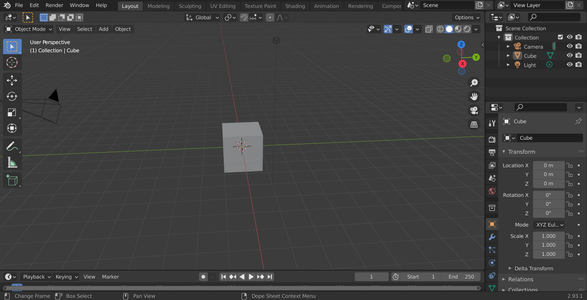
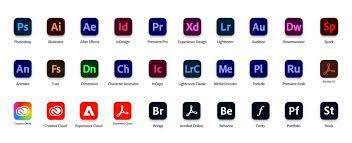

Software is a set of computer programs and associated documentation and data.[1] This is in contrast to hardware, from which the system is built and which actually performs the work.
At the lowest programming level, executable code consists of machine language instructions supported by an individual processor—typically a central processing unit (CPU) or a graphics processing unit (GPU).
Machine language consists of groups of binary values signifying processor instructions that change the state of the computer from its preceding state.
For example, an instruction may change the value stored in a particular storage location in the computer—an effect that is not directly observable to the user.
Software categories

Purpose, or domain of use
Application software uses the computer system to perform special functions beyond the basic operation of the computer itself.
System software manages hardware behaviour, as to provide basic functionalities that are required by users, or for other software to run properly, if at all.
Operating systems, Device drivers, Utilities.
Malicious software, or malware, is software that is developed to harm or disrupt computers.
Programming tools are also software in the form of programs or applications that developers use to create, debug, maintain, or otherwise support software.
Software is written in one or more programming languages; there are many programming languages in existence, and each has at least one implementation, each of which consists of its own set of programming tools.
These tools may be relatively self-contained programs such as compilers, debuggers, interpreters, linkers, and text editors, that can be combined to accomplish a task; or they may form an integrated development environment (IDE), which combines much or all of the functionality of such self-contained tools.
Adobe Creative Cloud

Make. Create. Amazing.
Whatever you want to create, we have what you need to make it amazing.
Photoshop
Illustrator
Acrobat Pro
Premiere Pro
InDesign
Adobe Express
New in Creative Cloud
Create faster with new AI features in Illustrator, Premiere Pro, and Lightroom. Collaborate with Share for Review in Photoshop and Illustrator. And make standout content quickly with Adobe Express.